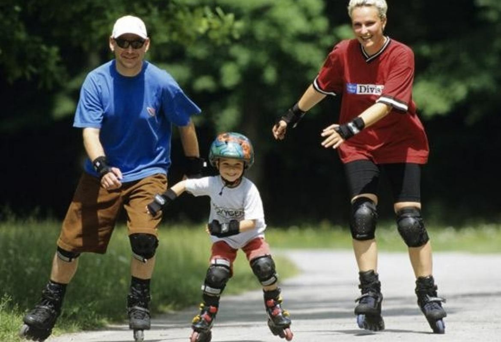
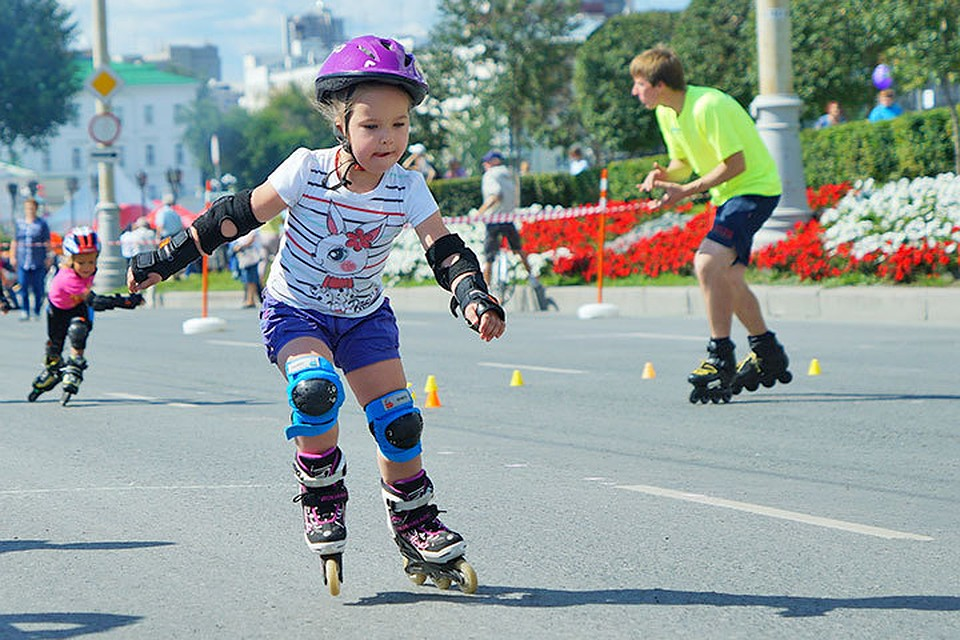
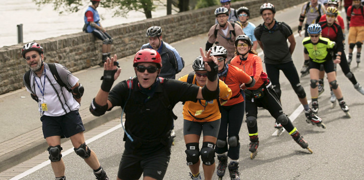

Катание на роликах
Описание
Данный вид спорта появился в 1990-е годы, но быстро приобрел популярность среди детей, молодежи и более взрослых людей. Поклонников катания на роликовых коньках с каждым годом становится все больше. Появились разные виды — фристайл, хоккей, скоростной бег на роликах и даже командное катание.
Данный вид спорта появился в 1990-е годы, но быстро приобрел популярность среди детей, молодежи и более взрослых людей. Поклонников катания на роликовых коньках с каждым годом становится все больше. Появились разные виды — фристайл, хоккей, скоростной бег на роликах и даже командное катание.


